1.The Fundamentals of Python
2.Control Structures and Loops
3.Functions and Modules
4.Data Structures and Manipulation
5.Object-Oriented Programming in Python
6.Error Handling and Debugging
7.File Handling and Input/Output
8.Python Libraries and Frameworks
9.Web Development with Python
Welcome to "Mastering Python Programming: A Comprehensive Guide." In this book, we will embark on a journey to explore the world of Python programming from its fundamental concepts to advanced applications. Whether you are a beginner stepping into the realm of programming for the first time or an experienced developer looking to expand your skillset, this book is designed to cater to your learning needs.
Python, with its elegant syntax and versatility, has become one of the most popular programming languages in the world. It is renowned for its readability and ease of use, making it an ideal choice for beginners. Moreover, its extensive collection of libraries and frameworks empowers developers to create a wide range of applications, from simple scripts to complex machine learning models.
Throughout this book, we will cover various topics, starting with the basics of Python programming and gradually progressing to more advanced concepts. Each chapter will provide comprehensive explanations, real-world examples, and hands-on exercises to solidify your understanding. Additionally, to enhance your learning experience, every chapter will include practical code examples relevant to the discussed topic.
So, whether you aspire to build web applications, dive into data science, develop games, automate tasks, or explore the realms of artificial intelligence, "Mastering Python Programming: A Comprehensive Guide" will equip you with the knowledge and skills needed to excel in your Python journey.
Python, a high-level, interpreted programming language, was conceived in the late 1980s and has since gained immense popularity. Known for its clear and concise syntax, Python is a versatile language used for a variety of applications. In this chapter, we will cover the foundational aspects of Python programming.
Python's design philosophy emphasizes code readability and its use of significant whitespace. This whitespace-driven approach enhances code readability and minimizes common programming errors. Python's syntax allows developers to express their ideas concisely and clearly.
Before diving into programming, you need to set up your development environment. Python is available for various platforms, including Windows, macOS, and Linux. You can download and install Python from the official website, and many platforms even come with Python pre-installed.
Let's start with a simple "Hello, World!" program. Open a text editor or an integrated development environment (IDE), type the following code, and save it as hello.py:
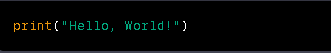To run the program, open a terminal, navigate to the directory where hello.py is saved, and enter:
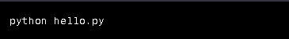Congratulations! You've just executed your first Python program.
In Python, variables are used to store data values. Unlike some other programming languages, Python is
dynamically typed, meaning you don't need to declare the variable's type explicitly. Python automatically
determines the type based on the assigned value.
Python supports various data types, including integers, floats, strings, lists, tuples, dictionaries, and more.
For example:
Python supports a wide range of operators for performing operations on variables and values. These include arithmetic operators (+, -, *, /), comparison operators (>, <,==, !=), logical operators (and, or, not), and more.
Control structures allow you to dictate the flow of your program based on conditions. Python offers if, elif, and else statements for conditional execution, as well as for and while loops for iterative processes.
In this introductory chapter, we've explored the basics of Python programming. You've learned how to set
up your environment, write and execute a simple Python program, work with variables and data types, and
use basic operators and control structures.
As you continue your journey through this book, you'll delve deeper into the world of Python
programming, uncovering more advanced concepts and practical applications. So, buckle up and get ready
to master the art of Python programming!
Stay tuned for Chapter 2, where we'll dive into the exciting realm of control structures and loops in
Python programming.
In the previous chapter, you gained a solid understanding of the fundamentals of Python programming. Now, let's take a closer look at control structures and loops, which play a crucial role in determining the flow of your program and performing repetitive tasks.
Conditional statements allow you to execute specific code blocks based on conditions. The if statement is the most basic form, followed by elif (short for "else if") and else. These statements enable your program to make decisions and choose different paths of execution.
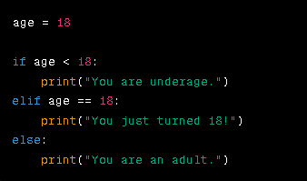Loops are essential for performing repetitive tasks without writing redundant code. Python provides two main types of loops: for loops and while loops.
The for loop allows you to iterate over a sequence, such as a list, tuple, or string. This is useful when you want to perform an action on each element of the sequence.
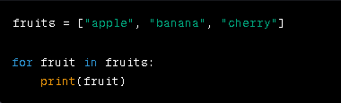A while loop continues executing a block of code as long as a specified condition remains true. Be cautious with while loops to avoid infinite loops.
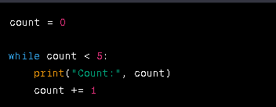In loops, you can use the break statement to exit the loop prematurely, even if the loop's condition hasn't been met. On the other hand, the continue statement allows you to skip the current iteration and proceed to the next one.
Python allows you to nest loops within each other, creating complex patterns and iterating through multidimensional data structures like lists of lists.

Control structures and loops are essential tools in a programmer's toolbox. With conditional statements, you can make decisions and tailor your program's behavior, while loops help you perform repetitive tasks efficiently. In this chapter, you've explored if, elif, and else statements for conditional execution, as well as for and while loops for iteration. Additionally, you've learned how to use the break and continue statements to control the flow of loops. As you continue your journey through this book, you'll build upon these foundational concepts, incorporating them into more complex programs and applications. In Chapter 3, we'll delve into functions and modules, which will enhance your code's modularity and reusability. Stay curious and keep coding! Continue your learning adventure with Chapter 3, where you'll uncover the power of functions and modules in Python programming.
Welcome to Chapter 3 of "Mastering Python Programming: A Comprehensive Guide." In the previous chapters, you gained insights into the fundamentals of Python and explored control structures and loops. Now, let's delve into the world of functions and modules, which will enable you to write more organized, modular, and reusable code.
Functions are a fundamental concept in programming. They allow you to group a set of instructions into a single block of code that can be called and executed when needed. This promotes code reusability and readability.
In Python, you can define a function using the def keyword, followed by the function's name, parameters, and a colon. The function body is indented and contains the instructions to be executed.
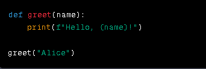Functions can also return values using the return statement. This allows you to capture the result of a function and use it in your program.
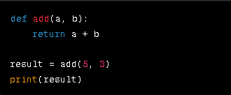As your Python projects grow, you'll likely have multiple functions and pieces of code to manage. Modules provide a way to organize related functions and variables into separate files, making your codebase more maintainable.
To create a module, simply save a .py file containing your functions. You can then import and use those functions in other Python scripts.
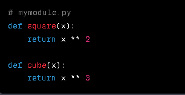 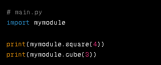Python offers various ways to import modules. You can import the entire module or specific functions from it. Additionally, you can use the as keyword to assign a module or function an alias for brevity.
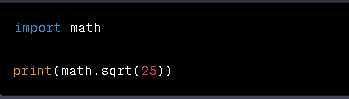Python comes with a rich collection of built-in modules that provide additional functionality, such as handling dates, working with files, and performing mathematical operations
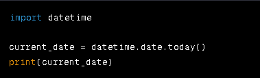In this chapter, you've explored the concept of functions and learned how to define and use them to structure your code. Additionally, you've discovered the benefits of modules in organizing your codebase and promoting reusability. As you progress through this book, you'll continue to build on these foundational concepts, delving into more advanced topics and real-world applications of Python programming. In Chapter 4, we'll dive into data structures and manipulation, which are crucial for working with collections of data. Stay engaged and keep honing your Python skills! Next up is Chapter 4, where you'll unlock the power of data structures and manipulation in Python programming.
Welcome to Chapter 4 of "Mastering Python Programming: A Comprehensive Guide." In the previous chapters, you've covered the basics of Python, control structures, loops, functions, and modules. Now, it's time to explore data structures and manipulation, which are essential skills for handling and organizing data effectively in your programs.
Lists are one of the most versatile data structures in Python. They allow you to store a collection of items, which can be of different types. Lists are mutable, meaning you can modify their contents after creation.
You can create a list by enclosing elements in square brackets, separated by commas.
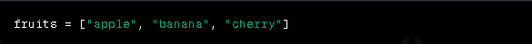List elements are accessed using index numbers, starting from 0. You can also modify elements by assigning new values to specific indices.
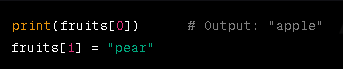Python provides a variety of built-in methods for manipulating lists, such as append(), insert(), remove(), pop(), and sort().
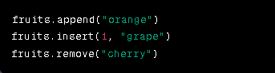Similar to lists, tuples allow you to store a collection of items. However, tuples are immutable, meaning their contents cannot be changed after creation.
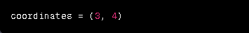Dictionaries are collections of key-value pairs. They are unordered and allow you to quickly retrieve values based on their keys.
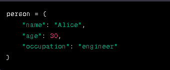Sets are collections of unique elements. They are particularly useful when you need to store distinct values and perform set operations.
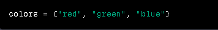List comprehensions provide a concise way to create lists based on existing sequences or other iterable objects.
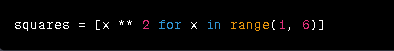In this chapter, you've explored essential data structures in Python, including lists, tuples, dictionaries, and sets. These data structures are fundamental tools for managing and manipulating data in your programs. As you continue your journey through this book, you'll build upon these concepts and delve into more advanced topics. In Chapter 5, we'll explore the world of object-oriented programming (OOP) in Python, allowing you to create more organized and modular code. Stay curious and keep expanding your Python programming skills! Next in line is Chapter 5, where you'll uncover the principles of object-oriented programming (OOP) in Python.
Welcome to Chapter 5 of "Mastering Python Programming: A Comprehensive Guide." In the previous chapters, you've gained a solid foundation in Python programming, covering topics from fundamentals to data manipulation. Now, it's time to explore the principles of object-oriented programming (OOP) in Python, which will enable you to create more organized and modular code.
Object-Oriented Programming (OOP) is a programming paradigm that revolves around the concept of objects. Objects are instances of classes, which serve as blueprints for creating objects with defined attributes (variables) and behaviors (methods).
In Python, you can define a class using the class keyword, followed by the class name and a colon. Inside the class, you can define attributes (variables) and methods (functions).
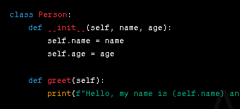
class Person:
def __init__(self, name, age):
self.name = name
self.age = age
def greet(self):
print(f"Hello, my name is {self.name} and I'm {self.age} years old.")
Once you've defined a class, you can create objects (instances) of that class using the class constructor.

Accessing Attributes and Methods You can access an object's attributes and methods using dot notation.
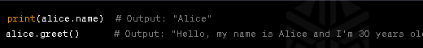Inheritance allows you to create a new class that inherits attributes and methods from an existing class (base class). This promotes code reuse and supports the creation of specialized classes.
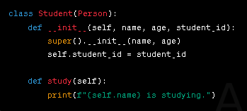Polymorphism enables objects of different classes to be treated as objects of a common superclass. This allows you to write code that can work with different types of objects in a unified way.
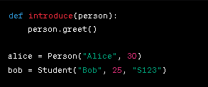
In this chapter, you've embarked on a journey into the realm of object-oriented programming (OOP) in
Python.
You've learned how to define classes, create objects, access attributes and methods, utilize inheritance
for
code reuse, and leverage polymorphism for flexibility.
As you continue your exploration of Python programming, you'll build upon these OOP concepts and apply
them
to real-world scenarios. In Chapter 6, we'll explore error handling and debugging, equipping you with
tools
to write robust and reliable code.
Stay curious and keep honing your Python skills!
Next up is Chapter 6, where you'll delve into the world of error handling and debugging in Python
programming.
Welcome to Chapter 6 of "Mastering Python Programming: A Comprehensive Guide." In the previous chapters, you've covered a wide range of topics, including the fundamentals of Python, control structures, functions, data manipulation, and object-oriented programming. Now, it's time to delve into the crucial skills of error handling and debugging, which are essential for writing robust and reliable code.
Errors are an inevitable part of programming. They can occur due to syntax mistakes, logical flaws, or unexpected data. Python provides mechanisms to handle and manage these errors effectively.
There are three main types of errors in Python:
These occur when you violate the rules of the Python language. They are often caught by the Python interpreter when you try to execute the code.
These errors occur during the execution of the code and are usually related to unforeseen circumstances, such as division by zero or trying to access an index that doesn't exist.
These errors do not generate error messages, but they result in incorrect behavior of the program. They can be challenging to identify and debug.
Python provides a structured way to handle exceptions using try, except, else, and finally blocks.

Debugging is the process of identifying and fixing errors in your code. Here are some techniques to help you debug effectively:
Insert print statements at critical points in your code to monitor variable values and execution flow.
Python provides built-in debugging tools, such as the pdb module, which allows you to set breakpoints and step through your code.
Utilize the logging module to create detailed logs that help you track the flow of your program.
NameError: Trying to use a variable before it's defined. TypeError: Operating on incompatible data types. IndexError: Accessing an index that doesn't exist in a list or tuple. ValueError: Function arguments have valid types, but invalid values. KeyError: Accessing a dictionary key that doesn't exist. FileNotFoundError: Attempting to open a file that doesn't exist.
In this chapter, you've learned how to handle errors and debug your Python code effectively. Errors are
natural occurrences in programming, but with the right techniques, you can identify, fix, and even prevent
them.
As you continue your journey through Python programming, you'll apply these error-handling and debugging
skills to ensure your code is robust, reliable, and free of unexpected surprises. In Chapter 7, you'll
explore the world of file handling and input/output operations in Python, enabling you to work with external
data sources.
Stay determined and keep refining your Python programming prowess!
Next in line is Chapter 7, where you'll dive into the realm of file handling and input/output operations in
Python.
Welcome to Chapter 7 of "Mastering Python Programming: A Comprehensive Guide." In the previous chapters, you've gained a solid understanding of Python's fundamentals, control structures, functions, data manipulation, object-oriented programming, error handling, and debugging. Now, it's time to explore the world of file handling and input/output operations, which are essential for interacting with external data sources and creating more dynamic applications.
Python provides various functions and methods for working with files. Files can be used to store data, configurations, logs, and more.
You can open a file using the built-in open() function, which returns a file object. After working with the file, it's crucial to close it using the close() method to release system resources.
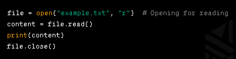Files can be read using methods like read(), readline(), or readlines(). For writing, you can use methods like write().
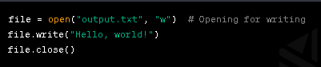The with statement ensures that the file is properly closed after usage, even if an exception occurs.
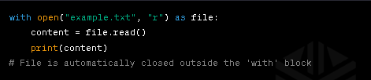Python's standard input and output functions allow you to interact with the user through the console.
The input() function reads a line of text from the user
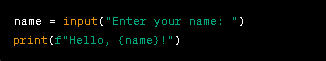The print() function outputs text to the console. You can format the output using string formatting or f-strings
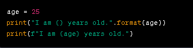
In this chapter, you've delved into the world of file handling and input/output operations in Python. You've
learned how to open, read, and write files, as well as interact with users through the console using input
and output functions.
As you progress through this book, you'll continue to build upon these concepts, incorporating them into
real-world scenarios and applications. In Chapter 8, you'll explore Python libraries and frameworks,
expanding your toolkit and capabilities.
Stay engaged and keep expanding your Python programming skills!
Next in line is Chapter 8, where you'll dive into the realm of Python libraries and frameworks, unlocking
new possibilities in your programming journey.
Welcome to Chapter 8 of "Mastering Python Programming: A Comprehensive Guide." In the previous chapters,
you've gained valuable insights into Python's core concepts, control structures, functions, data
manipulation, object-oriented programming, error handling, debugging, file handling, and input/output
operations.
Now, it's time to take your skills to the next level by exploring the vast world of Python
libraries and frameworks, which can significantly enhance your productivity and extend the capabilities of
your programs.
Python boasts a rich ecosystem of libraries that provide pre-built functions and modules to address a wide range of tasks. These libraries save you time and effort by allowing you to leverage existing solutions.
NumPy: A powerful library for numerical computations and working with arrays, matrices, and mathematical functions.
Pandas: A data manipulation library that provides data structures and tools for efficient data analysis and manipulation.
Matplotlib and Seaborn: Libraries for creating visualizations and plots to help you analyze and present your data.
Requests: A library for making HTTP requests, allowing you to interact with web services and APIs.
Beautiful Soup: A library for parsing HTML and XML documents, enabling web scraping and data extraction.
You can install libraries using the package manager pip. Once installed, you can import and use the library's functionalities in your code.
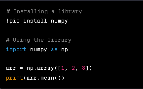Frameworks provide a structured foundation for building applications, saving you time by providing predefined structures, patterns, and functionalities.
Web Development: Flask and Django
Flask: A lightweight and flexible framework for building web applications and APIs.
Django: A robust framework for building web applications, emphasizing rapid development and scalability.
GUI Development: Tkinter and PyQt
Tkinter: A standard GUI library that comes with Python, making it easy to create graphical user interfaces.
PyQt: A powerful library for creating cross-platform graphical applications with complex user interfaces.
In this chapter, you've explored the world of Python libraries and frameworks that can drastically improve
your productivity and expand your programming capabilities. By utilizing pre-built functionalities and
adhering to established patterns, you can focus more on solving problems and less on reinventing the wheel.
As you continue your journey through this book, you'll apply these libraries and frameworks to real-world
scenarios, enhancing your programming skills and building more sophisticated applications. In Chapter 9,
you'll dive into web development with Python, unlocking the potential to create dynamic and interactive web
applications.
Stay inquisitive and keep honing your Python programming prowess!
Next up is Chapter 9, where you'll embark on the exciting journey of web development with Python, building
dynamic and interactive web applications
Welcome to Chapter 9 of "Mastering Python Programming: A Comprehensive Guide." In the previous chapters, you've covered a wide array of topics, including Python fundamentals, control structures, functions, data manipulation, object-oriented programming, error handling, debugging, file handling, input/output operations, and the world of Python libraries and frameworks. Now, it's time to venture into the realm of web development with Python, where you'll learn how to create dynamic and interactive web applications that can be accessed by users worldwide.
Web development involves creating websites and web applications that users can access via web browsers. Python offers various tools and frameworks that simplify the process of building web-based solutions.
Flask is a popular and lightweight web framework that allows you to build web applications and APIs quickly and efficiently. It follows the "micro" philosophy, giving you the flexibility to choose the components you need.
To get started with Flask, you need to install it using pip and create a basic Flask application.
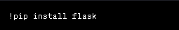Here's a basic example of a Flask web application:
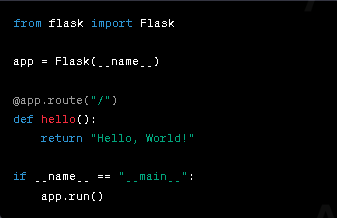Save the above code to a file (e.g., app.py) and run it:
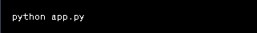Visit http://localhost:5000 in your web browser to see your Flask application in action.
Django is a high-level web framework that emphasizes rapid development and follows the "batteries-included" philosophy. It provides many built-in features and conventions for creating complex web applications.
You can install Django using pip:
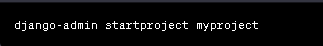Django projects are composed of individual apps. Create an app within your project:
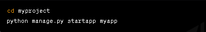Running the Development Server Start the development server
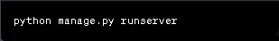Visit http://localhost:8000 in your web browser to see your Django application.
In this chapter, you've taken your first steps into the exciting realm of web development with Python.
You've explored Flask, a lightweight and flexible web framework, as well as Django, a powerful framework for
building robust web applications.
As you continue your journey through this book, you'll dive deeper into web development concepts, explore
databases and user authentication, and build more sophisticated web applications. In Chapter 10, you'll
explore database interaction and SQL in Python, enabling you to store and manipulate data effectively.
Stay enthusiastic and keep expanding your Python programming horizons!